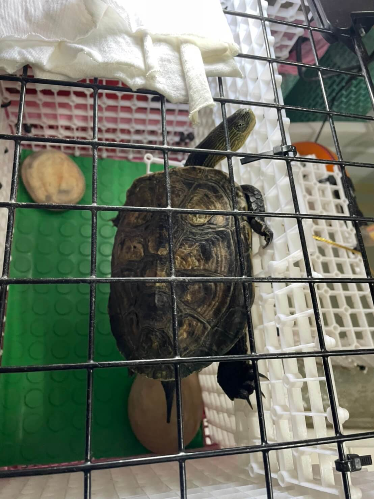

-
空間 :
準備至少比水龜體型大8倍以上的空間，30%的陸岸與70%的水。可放置石塊、浮木供其休息，
水的高度需要高於背殼頂端，確保水龜不慎翻面時，有足夠水量或是底部的底材，使其自行翻回；另外斑龜善於攀爬，極容易越獄，飼養箱需要加蓋。
附上我家班龜越獄行動 "之一" 圖 -
陽光 :
一天曬至少20-30分鐘的陽光，另外飼養箱放置有日光的空間即可，若是飼養空間較大可以把烏龜另外抓在一個容器中，加入足夠的水，需注意保留陰影處給水龜躲藏。陽光中的紫外線可以幫助水龜吸收鈣質，無陽光時可用紫外線燈補充。
-
陸地 :
上述有提到30%的陸岸與70%的水，這針對澤龜所設置的大略環境，在飼養前應先做飼養功課，包括該品種屬於半水龜(澤龜)還是全水龜(水龜)，一般澤龜都是需要陸地來休息或者曬太陽，以免因為在水中過久，力氣耗盡溺水。
陸地的選擇可以使用市面上所販賣的浮台，或是自己購買魚缸隔板手做成自己想要的曬台。 (如下方環境總覽的圖片，都是龜奴本人親自搭建XD)
-
水 :
先從水質來說，有些品種的龜對於水質是十分要求的，例如:鑽紋龜，豬鼻龜，一旦水質不乾淨就會開始出現皮膚病的症狀。
在水族知識中養魚是必須經過養水步驟，也就是曝氣，簡單來說就是將水中的有毒物質經過陽光或是水質穩定劑消滅，但是養龜(除了剛剛提到的鑽紋或豬鼻)是不需要曝氣的，因為龜本身沒有鰓不需要透過水中氧氣存活，可以直接吸取外界氧氣。
水深的部分，一般來說龜的水性都不差，水深不夠的話反而會因為空間不足無法翻身造成遺憾，建議添加龜甲「長度」2-2.5倍的水量較為合適。
-
保溫設備 :
室內環境溫度大約保持23~28°C即可，若飼養在室外時，需要注意冬天水溫是否低於15°C，以及夏天日照直射是否高於32°C。另外要注意陸地與水中的溫度不要差距過大，以免讓愛龜出現感冒的症狀。
在選擇加溫工具時，請盡量把握以下兩點 : 1.選擇有牌的加溫器，2. 選擇外層有玻璃罩的加溫器。
-
環境總覽參考 :
飼養手冊(僅供參考)
水龜飼養
-
原理 :
過濾器由過濾槽、抽水馬達和過濾材料組成。它的工作原理是通過抽水泵將水族箱內的水抽吸到過濾槽中，由過濾槽內的過濾材料進行過濾將水中的汙染物(ex:糞便、食物殘渣...等)先由物理過濾 先濾掉，再經由化學過濾 產生 硝化菌 ，將硝化菌跟著出水口進入水中接著 硝化菌會分解水中有毒物質，讓水中保持乾淨清澈。
- ------以下過濾系統圖片皆為示意，並無特別推薦或廣告 !------
-
低水位過濾
因為蠻多人推薦新手使用這款，但我們並不推薦使用 ，這種過濾器基本就是一片過濾板。過濾板內有一點點活性炭。是無法培菌的，不太可能形成良好的生化過濾。即使有的可以自己添加一點點濾材效果也不是很明顯。
-
優點：體積小，好擺放。適合低水位寵物使用 (ex:角蛙)。
-
缺點：無法形成良好的水循環。底部吸入水，頂部出水，基本就只能過濾附近的一點點水。有的甚至連附近的糞便殘渣都吸不走。
-
-
外掛過濾

利用過濾器內的沉水馬達帶動水流，再經由各濾材達到過濾功能，價格便宜且不佔空間，常見於使用在小型魚缸
-
優點：價格便宜、體積小、清潔容易。
-
缺點：需較常清洗、大型魚缸不適用、過濾能力較普通。
-
-
上部過濾
這是種非常常見於兩呎以上缸的過濾方式，過濾器架在魚缸上方過濾後的水直衝進缸中，可以增加溶氧量，有三層過濾盒。
- 第一層為物理過濾 : 將糞便與殘渣阻擋在第一層的過濾棉上。
- 第二、三層為化學過濾 : 培養硝化菌的地方，儘量不要讓糞便進入這裡以免影響硝化菌的培養。
-
優點：體積小，好擺放。適合低水位寵物使用 (ex:角蛙)。
-
缺點：無法形成良好的水循環。底部吸入水，頂部出水，基本就只能過濾附近的一點點水。有的甚至連附近的糞便殘渣都吸不走。
-
圓桶過濾
跟上部過濾比起來為較安靜美觀，且不會讓草缸溶氧量過多還有co2逸散
-
優點：不佔用魚缸內部空間、可放置多樣性濾材，較適合水草缸。
-
缺點：清洗麻煩、價格偏貴需另外佔用外部空間。
-
-
底部過濾
在缸子外放一個大型隔層設計的魚缸當作過濾槽的過濾，一般用在大型魚缸，只是如果缸子本來就沒有配合他的孔洞設計的話設置起來麻煩！需要比較專業的管線設計人員。
-
優點：擁有極為可觀的濾材容量，過濾能力極佳。
-
缺點：需要較大的空間與專業設置、清洗超麻煩。
-
-
換水 :
食物殘渣和排泄物會使水混濁、發臭，因此需要做換水的動作，若無過濾系統建議 2~3天 換一次，有過濾系統的話，看水的情形與過濾強度大概7-14天 換一次水；
換水時順便清洗浮台或曬太陽的地方、過濾器材，另外會順便清洗龜殼，可以使用牙刷刷去殼上髒污和苔藻。
-
餵食 :
水龜在早晨和傍晚最活躍，可在此時餵食，水龜多為雜食性龜類，建議餵食混合性飼料為主，偶爾提供無脂肪的生肉或肝臟、魚、蝦、昆蟲、蔬菜等，在餵食後要注意水質。幼龜需天天餵食，成龜一週餵食3~4次即可，冬天或氣溫降低前可以減少餵食次數。
另外，烏龜最為需要的為鈣，餵食時請搭配含有鈣的食物，烏龜補充鈣質搭配曬太陽攝取太陽中的UVB 元素，這樣有助於龜殼的成長，不翹甲
-
曬燈(UVB燈) :
曬燈對於水龜來說，看個人需求可有可無，有些人平常沒時間每天搬烏龜出去曬太陽，這時候曬燈就起到了輔助烏龜攝取UVB的功用。在挑選燈具請注意瓦數是否適合你養的品種。